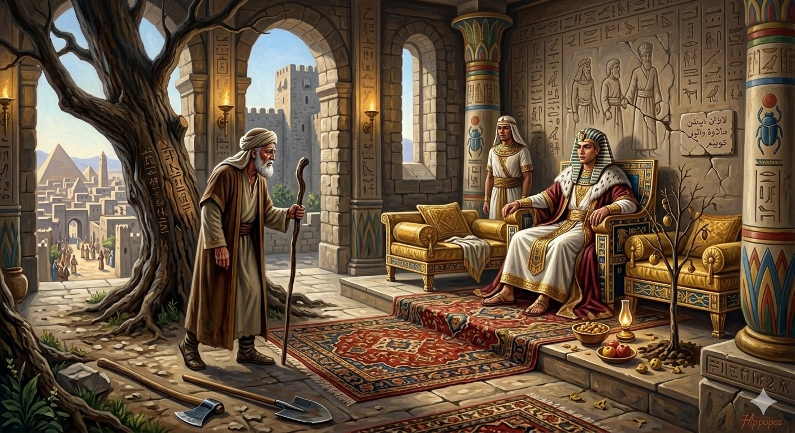

И.А. Дахкильгов. Хьехаме дувцарш - поучительные рассказы-притчи.
И.А. Дахкильгов. Хьехаме дувцарш - поучительные рассказы-притчи. Из ингушского фольклора.

Йоакъаба цӀен тӀара пайхамаралал дӀа хӀана даьлар
Ховш да, Йоакъаб-пайхамара цӀен тӀа хӀара тӀехье тӀа мел кхув цунна юкъе цхьацца пайхамар хулаш хинналга. Йоакъаб-пайхамара дукхача къонгашта юкъе пайхамарал кхаьча хиннад цхьан Ювсапага. ПирӀон-паччахь вола воккха хьаким хиннав Ювсап-пайхамарах. Цох курваьнна хиннав из. Ший да Йоакъаб-пайхамар ше волча цӀагӀа хьачуваьнначул тӀехьагӀа, Ювсап-пайхамар цунна хьалгӀетта хиннавац. Иззал курваьнна хиннав. Даь, наьна сий деш воацачох пайхамар хила йиш яц. Кхы пайхамар ца хулаш Ювсапа тӀа сецад Йоакъаб-пайхамара цӀен тӀара пайхамарал.
РУССКИЙ
Из-за чего потомки Якуба лишились пророческого сана
Известно, что в каждом новом потомстве рода пророка Якуба появлялся один новый пророк. Среди многих сыновей Якуба лишь один Юсуп удостоился пророческого сана. При дворе фараона пророк Юсуп стал весьма влиятельным, царственным вельможей. Он очень возгордился этим. Раз в покои Юсупа зашел его отец, пророк Якуб. Пророк Юсуп не поднялся с сидения в честь вошедшего отца, настолько сын возгордился. Не может быть пророком тот, кто не чтит своих родителей. Пророчество в роду Якуба завершилось на Юсупе. Далее пророков в их роду уже не было.
ENGLISH
This is why the descendants of Jacob lost their prophetic status
In every new generation of Jacob's lineage, a new prophet would appear. However, among Jacob’s many sons, only Joseph was granted the prophetic office. At the court of the Pharaoh, the prophet Joseph became a highly influential nobleman. He became very proud of this. One day, his father, the Prophet Jacob, entered Joseph’s chambers. However, the Prophet Joseph did not rise from his seat in honour of his father’s arrival, such was his pride. One who does not honour their parents cannot be a prophet. The line of prophets descended from Jacob ended with Joseph. There were no further prophets in their lineage.
НОХЧИЙН
Йакъабан цӀен тӀера пайхамаралла дӀа хӀунда делира
Хууш ду, Йакъаб-пайхамаран цӀен тӀехь хӀор тӀаьхье тӀе мел кхуьу цунна йукъе цхьацца пайхамар хуьлуш хиллий. Йакъаб-пайхамаран дукхачу кӀенташна йуккъе пайхамаралла кхаьчна хилла цхьана Юсапега. ПирӀун-паччахь волучохь воккха хьаькам хилла Юсап-пайхамарах. Цунах кураваьлла хилла иза. Шен да Йакъаб-пайхамар ша волче цӀийне схьачуваьллачул тӀехьа, Юсап-пайхамар цунна хьалагӀеттина хилла вац. Оццул кураваьлла хилла. Ден, ненан сий деш воцучух пайхамар хила йиш йац. Кхин пайхамар ца хуьлуш Юсапан тӀехь сецна Йакъаб-пайхамаран цӀен тӀера пайхамаралла.
ПОГОВОРКИ